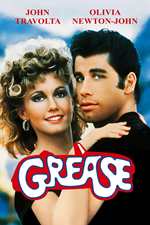
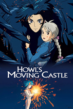
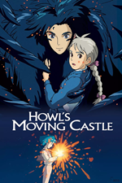

Navigation
Home About School Hobbies Work Contact
About Me
Hello! My name is Kat. I am 30-years-old, and I work full-time as a manager for a service desk.
I am passionate about three things:
- Technology
- Writing
- Video games
School Information
I am currently studying Computer Science at the University of Texas at San Antonio.
Some of the courses I have taken are:
| Programming I for Computer Science | Summer 2023 | A- |
| Essence of Computer Science | Fall 2023 | A+ |
| Computer Programming in C (Computer Programming II) | Fall 2023 | A |
| Discrete Mathematical Structures | Fall 2023 | A+ |
| Data Structures | Spring 2024 | A |
| Mathematical Foundations in Computer Science | Spring 2024 | A+ |
| Computer Organization | Spring 2024 | A- |
| Principles of Cybersecurity | Spring 2024 | A |
| Cyber Operations | Spring 2024 | A+ |
| Analysis of Algorithms | Summer 2024 | A+ |
| Computer Architecture | Summer 2024 | A |
| Application Programming | Summer 2024 | A+ |
| Systems Programming | Summer 2024 | B |
| Operating Systems | Fall 2024 | B+ |
| Database Systems | Fall 2024 | A+ |
| User Interfaces | Fall 2024 | A |
| Game Development | Fall 2024 | A+ |
| Cloud Computing | Fall 2024 | A+ |
My overall GPA for my Computer Science courses is 3.86.
Hobbies & Interests
In my free time, I enjoy:
- Watching movies, my favorites being:
- Back to the Future
- Grease
- Howl's Moving Castle 
 

- Playing video games
- Creative Writing
- Listening to music
Current Job & Dream Job
After I graduate, I aspire to work as a Cyber or Network Engineer for a large-scale tech company.
My ultimate dream is to work for NASA or another large government organization.
As of this time, I just work as a Service Desk team lead for a Managed IT Service Provider.
Contact Information
- Email: katarah.griffin@my.utsa.edu
- Phone: (423)-509-5970
- Linkedin: Profile